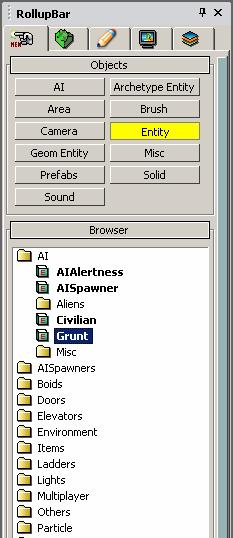
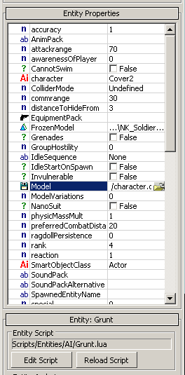
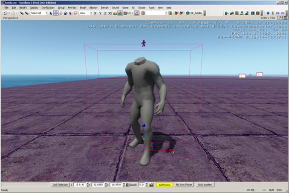
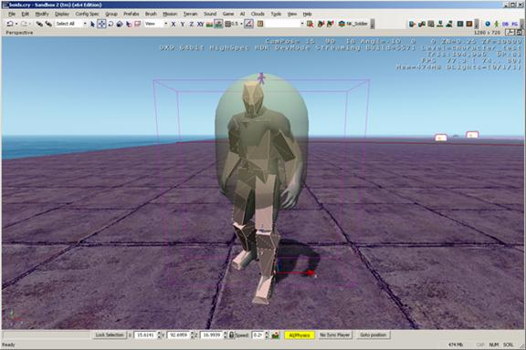
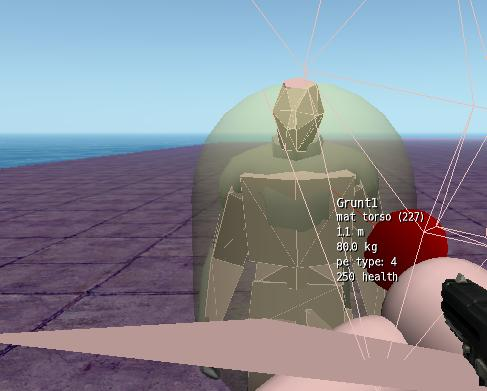
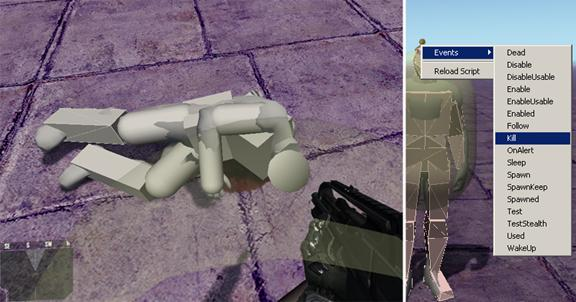
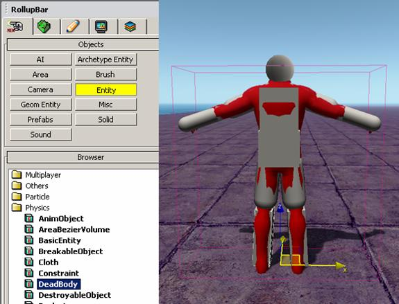

Overview
It can be difficult to judge whether or not the skeletal changes are working in the engine. Well, it's easy to see if it's deforming by simply playing an animation on it. The difficult thing can be checking the phys setup.
Checking the Phys Setup
On the Rollup Bar, select Entity, then drag a Grunt into an empty level. Under the Entity Properties for the Grunt, find the Model property.
 
When you reload the entity, you should see something like this:

Grunt Entity in engine with character.chr from the SDK loaded as Model under Entity Properties.
When working with characters, you will need to reload them to check the changes that you have made. The easiest way to do this is to right-click the character or the icon and select Reload Script, or you can click Reload Script under Entity Properties. Some systems can cache a character, and when all else fails, try closing the Editor and reopening it again.
Hit Detection and Live Physics
So now that you have the character in the engine, you need to check the skeleton. To do this, go to the console (press the ~ key), type p_draw_helpers 1, and press Enter. You should see something like this:

Character.chr with p_draw_helpers enabled, this shows the physical hit mesh.
p_draw_helpers
Same as p_draw_helpers_num, but encoded in letters
Usage [Entity_Types]_[Helper_Types] - [t|s|r|R|l|i|g|a|y|e]_[g|c|b|l|t(#)]
Entity Types:
t - show terrain
s - show static entities
r - show sleeping rigid bodies
R - show active rigid bodies
l - show living entities
i - show independent entities
g - show triggers
a - show areas
y - show rays in RayWorldIntersection
e - show explosion occlusion maps
Helper Types
g - show geometry
c - show contact points
b - show bounding boxes
l - show tetrahedra lattices for breakable objects
j - show structural joints (will force translucency on the main geometry)
t(#) - show bounding volume trees up to the level #
f(#) - only show geometries with this bit flag set (multiple f's stack)
Example: p_draw_helpers larRis_g - show geometry for static, sleeping, active, independent entities and areas
If the skeleton is in the default pose, you might need to toggle AI/Physics in the lower right.
So now you can see the deforming skeleton, you can jump into the game and shoot/test it. However, how do you know whether or not the hit materials have been set up properly? If you jump into the game mode and press 7, you will see that you have a weapon that tells you the material of any object you point at, and it will also give you even more information about that item if you shoot it. Here is what it looks like when pointing at the hit skeleton:

Using this tool, you can debug all the parts of the skeleton, checking them to see that they are set up with the proper materials.
Ragdolls
Testing ragdolls in the engine can be a lot of fun, especially for non-humanoids.

There are three ways to test the ragdoll physics of a character, the two best are shown above: Either shoot at them, or right-click them and select Events>Kill.

You can also add the character as a DeadBody entity. Be sure to deselect resting when you enter the game, or enable AI/physics; the ragdoll should simulate.
The ragdoll functionality was reduced for Crysis due to the strict ratings board in Germany, and consequently, once a ragdoll was at rest it ceased to be simulated. Licensees, however, received all CryENGINE features intact and could decide for themselves whether or not to implement ragdoll functionality.